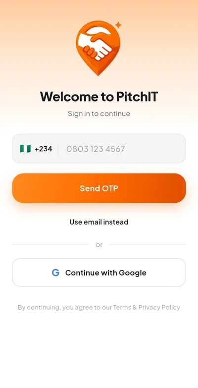
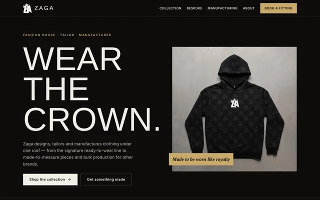
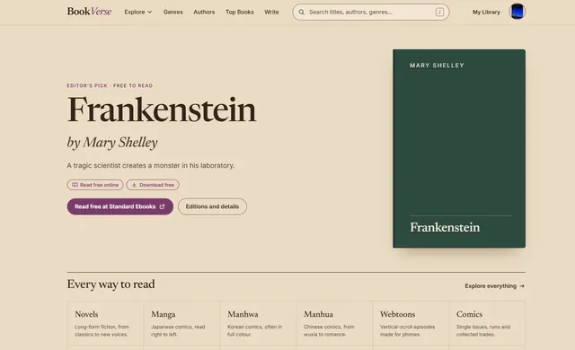
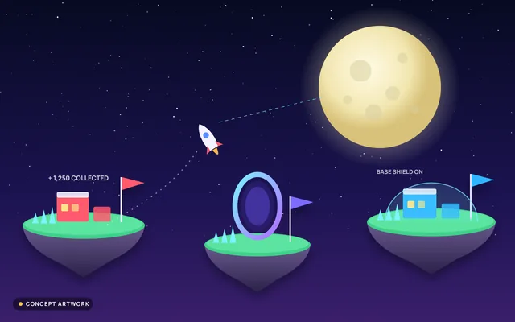
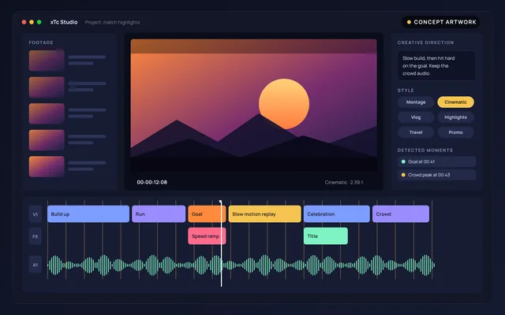

In development
Products being built right now. Each page separates what exists today from what is planned.

PitchIT
A marketplace for every kind of work in Nigeria, with a demo you can use right here.
Read the case study
EchoMind
A private Android journal for noticing how you really feel. No account, no internet.
Read the case study
Zaga
A fashion house website with a shop where every piece comes in ten colours. Built, waiting on the client's final details.
Read the case study
Princess UC Crafts
A website for a handmade adornments business: fascinators, hats, crowns, beads, hand fans and stoning on clothes.
Read the case study
BookVerse
A book and comics platform for discovering, reading and later publishing every kind of story. In development, with a live preview.
Read the case study
Concept artworkSteal the Moon
A multiplayer tycoon and heist game on Roblox: claim a base, collect, defend and rob your way toward the moon.
Read the case study
Concept artworkxTc Personal AI Studio
A personal creative studio for AI assisted video and photo editing. The Python and FFmpeg engine runs; the full studio is the vision.
Read the case study